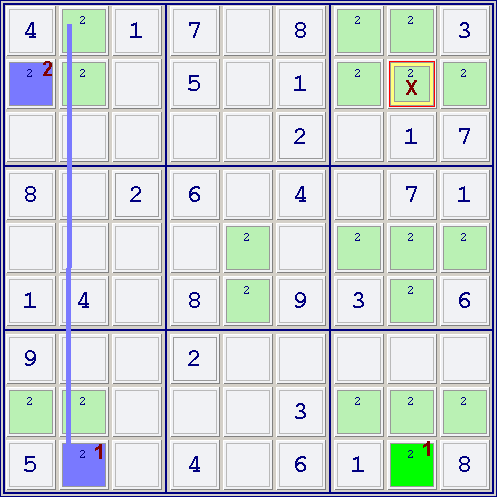
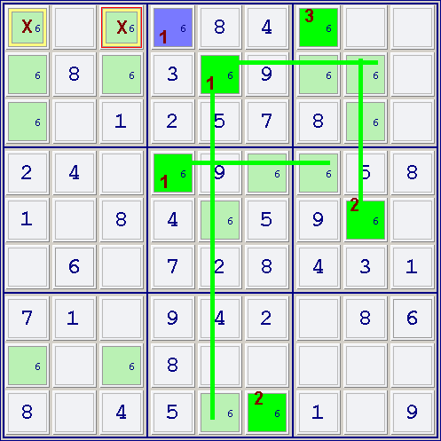
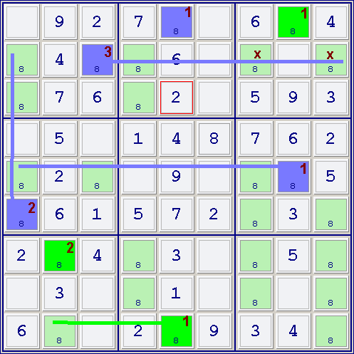
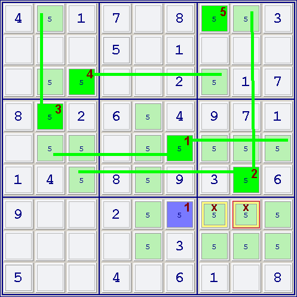
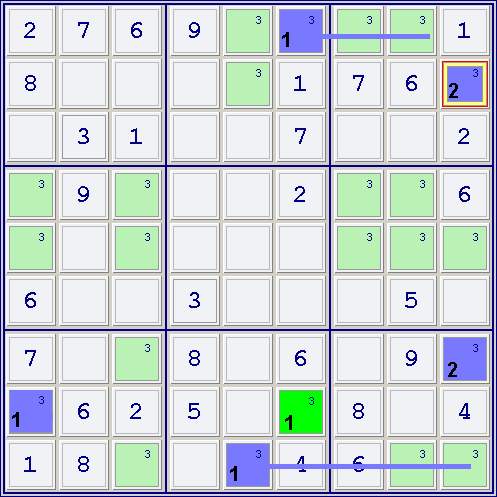
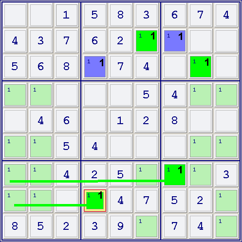
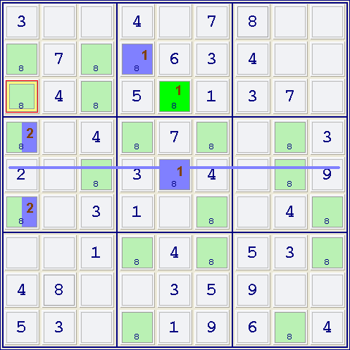

Mirrored from Sudopedia, the Free Sudoku Reference Guide
X-Colors
X-Colors, or eXtended Colors, is a coloring technique that uses only 2 colors, even when weak links are bridged. It is a relatively simple method that can be learned quickly and is capable of achieving the same results as more advanced techniques, such as Multi-Colors and single-digit chains.
This technique can be used on an initial color cluster of any size, although a larger cluster increases the chances of successfully finding candidates to remove.
X-Colors can be seen as an extension of the Weak Colors technique. Both Weak Colors and X-Colors are based on a simple set of instructions, which must be executed repeatedly.
Occasionally, X-Colors can go as far as Nishio, the ultimate single-digit solving technique. This places the technique in a dangerous territory, since many solvers like to avoid Nishio.
X-Colors do the same job than both Simple Colors and Multi-Colors with only two colors and a few simple steps, defined in an algorithmic way, and can solve situations that none of both can. However, X-Colors do not replace the multiple-digit Ultracoloring technique. See the examples below to better understand the technique.
Contents |
Algorithm
Focus on one single candidate in the grid, as X-Colors is a single-digit technique.
Step 1) Select one pair of conjugate cells, color one of them with color A and the other with color B.
Step 2) Until no more new cells can be found to be colored, do:
- 2.1) Find a not colored cell that is pair-conjugated with one cell already colored (with any color A or B).
- 2.2) Color this new cell with the OPPOSITE color of its already colored pair-conjugated cell. That is, if the colored conjugated cell is Color A, then the new cell will be Color B, and vice versa.
Step 3) Until no more new cells can be found to be colored, do:
- 3.1) If all but one and only one cell (called the Exception Cell) of all the candidates in a house are peers of cells colored with the same color (let's say color A), then this Exception cell can be colored with the SAME COLOR (A).
Step 4) Once marked A-B all possible cells in the puzzle position:
- 4.1) If one cell has two or more peers colored with both colors (A AND B), you can safely exclude this cell as a candidate for the focused digit.
- 4.2) If two or more cells of the same house (row, column or box) are colored with the same color A, then you can conclude that THE OTHER COLOR B IS TRUE.
- 4.3) If ALL the cells of a house are peers of cells colored with the same color A, you can conclude that THE OTHER COLOR B IS TRUE.
That's enough to define the whole coloring technique. In fact, when finished with the coloring at the end of step 3, you have three different clusters of cells: those colored A, those colored B, and those uncolored.
Thus, there are the True/False implications:
- If one cell colored A is identified as True, then the complete cluster of cells colored with the same color A are TRUE.
- If one cell colored A is identified as False, then the complete cluster of cells colored with the Opposite Color B are TRUE.
- If, following the technique's statements, you cannot prove any of the prior, then other techniques must be tried.
Please note that these two assertions DO NOT IMPLY that if A is true, then B is False, and vice versa. This "ying-yang" sentence is only true when dealing exclusively with conjugate pairs of cells, and, in that case, trueing cells colored A will immediately eliminate candidates in peer cells, included those colored B, so the distinction is irrelevant.
Important things to pay attention to:
- If we eliminate Step 3, what we have is the definition of Single Coloring. It is Step 3 that makes the difference. Its definition is quite simple, but it is very powerful.
- During the process in Step 3, if you color A one cell that has a pair-conjugated cell that has not been colored A or B until then, YOU CANNOT COLOR THIS UNCOLORED CELL WITH THE OPPOSITE COLOR. This is done in steps 1 and 2, but NOT in step 3). And Steps 1, 2, 3, 4 are executed in sequence; it is not allowed to go back, for instance, from step 3 to 2.
- Case 4.3 is very rare, and happens when there is not any Exception Cell in a house.
- X-Colors solves every position solved by both Single and Multiple Coloring techniques, but it solves some more positions where neither of them can. And it only uses two colors, which makes it easy to understand and use by humans.
- X-Colors solves too the same situations that X-Wing can, with the same moves. In fact, Multiple Colors does it too. So, if in one puzzle position you check X-Colors before checking X-Wing, you can eliminate X-Wing from your arsenal of techniques: it won't find any new moves in the puzzle. Unfortunately, it is not true with the rest of Fishing techniques.
Examples
They are a collection that shows all situations described before, except Single Colors. As X-Colors obviously solves the same puzzle situations as Single Colors, the author considers that examples of this are not of interest.
In these examples, the drawn lines (blue or green) are used to help understand the coloring implications of Step 3, marking all the cells of a house (box, line or column) that are affected by one or various cells already colored.
Example 1
Multicolors. In this situation, X-Colors finds the same move as the Multiple Colors Technique.

Focusing on 2, we mark the conjugate pair r9c2 (blue) and r9c8 (green). (Cells marked with 1). Step 2 does not mark any more cells.
Step 3 allows us to mark r2c1 Blue, because it is the only cell in its box that is not a peer of r9c2. (Cell marked with 2). No more cells can be marked in Step 3.
Step 4.1 allows removal of the candidate 2 from r2c8, because it is peer both of r2c1 (blue) and r9c8 (green). (Cell marked with X).
Example 2
Elimination not found by Single or Multiple Colors.

Focusing on 6, we mark the conjugate pair r1c4 (blue) and r2c5 (green).
Step 2 allows us to mark r4c4 green. (All these cells are marked with 1).
Step 3 allows in the first iteration to mark r9c6 green, and r5c8 green, because they are the only cells in their boxes that are not peers of r2c5 and r4c4 respectively. (Cell marked with 2).
Note that we can also mark r5c8 green because it is the only cell in its row which is not a peer of r4c4, and we can also mark r9c6 green because it is the only cell in its column which is not a peer of r4c4. The result is the same in this case.
Step 3, second iteration, allows us now to mark r1c7 green. It is the only cell of its box which is not a peer of green cells (in this example, r2c5 and r5c8 are peers of the rest of the cells of the box). (Cell marked with 3).
We can mark more cells in subsequent iterations of Step 3 (r3c1 green, and then r8c3 green), but the results will be the same and are not shown.
Step 4.1 allows removal of the candidate 6 from r1c1 and r1c3, because these cells are peers both of r1c4 (blue) and r1c7 (green). (Cells marked with X).
Example 3
Both elimination of candidates and contradiction, found in the same puzzle.

In a similar way as Example 2, and you can easily find the way to exclude the cells marked with X (r2c7 and r2c9), as they share as peer a green cell (r1c8 in its house) and a blue cell (r2c3 in its row).
BUT also you can see that r1c8 (already marked green) is the only cell in its box which is not a peer of r2c3, so, as Step 3 states, you can mark it BLUE. The result is a contradiction (a cell marked simultaneously green and blue) and two cells in a row (r1) and in a column (c8) with the same color (blue).
Then, as Step 4.2 states, the cells marked green are TRUE. You can immediately solve all the green cells (r1c8, r7c2 and r9c5) because all of them are an 8. Note that, even if you have found a contradiction with blue cells, you CANNOT assume that ALL BLUE CELLS ARE FALSE. You can only conclude in that situation that GREEN CELLS ARE TRUE.
Example 4
Elimination after multiple iterations of Step 3.

This is a nice example of how several iterations in Step 3 can find eliminations. In this position, focusing on 5, there is only one conjugate pair: r5c6 and r7c6 (Cells marked with 1).
After Step 2, no more cells can be marked. Single Colors and Multiple Colors are useless here.
Performing various iterations of Step 3, we can mark green different cells (only one cell each iteration), marked with numbers 2 to 5. When Step 3 cannot mark any more cells, we can exclude the candidate 5 from cells marked X (Step 4.1)
Example 5
Contradiction.

After Step 1 and 2 we have colored cells marked 1.
Step 3 colors (blue) two cells of column 9 (r2c9 and r7c9). That's a contradiction, and you can conclude, as stated in Step 4.2, that Green cells (in this case, r8c6) are TRUE. Once again, in this position you cannot conclude that Blue Cells are false, but that Green Cells are True.
Example 6
Contradiction, and No cells left in one house to be colored with one color.
This position can also be solved with Multicolors, but it can be used to address the rare situation in which one house cannot hold any cell of a given color (Step 4.3).

Focusing on 1, and after initial Coloring (Cells marked 1), and even before applying Step 3, you can see that all cells in the lower-left box are peers of green cells.
No one cell can then be marked green in this box, so, as Step 4.3 states, you can conclude that BLUE CELLS ARE TRUE, and they contain a 1.
Augmenting X-Colors with Single-Digit Techniques
The X-Colors technique can be further augmented with single-digit techniques for faster or further eliminations. The following example shows how we can replicate Empty Rectangle using X-Colors plus Pointing Pair:

After the initial coloring for digit 8, r5c3 cannot be colored blue so either r4c1 or r6c1 can be colored blue, although we don't know which one. But we do get a Pointing Pair in the fourth box due to these two cells. Since r3c1 is pointed to by these cells and r3c1 also sees a green cell, we can eliminate 8 from r3c1. This shows how we can replicate Empty Rectangle using X-Colors with Pointing Pair. (In this example, the same elimination can be made after four iterations of Step 3, but by using Pointing Pair we need only two iterations.)
We can also conceive of X-Colors augmented with other single-digit techniques such as Swordfish, Jellyfish and so on. Not with X-Wing, due to the fact that X-Colors makes the same eliminations than X-Wing (actually, Multi-Colors already do the same eliminations than X-Wing, and X-Colors completely covers Multi-Colors).
External Links
See Also
This page was last modified 19:29, 11 November 2008.
- Content is available under GNU Free Documentation License 1.2.
- About Sudopedia
- Disclaimers
- Mirrored from sudopedia.org